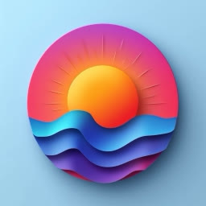
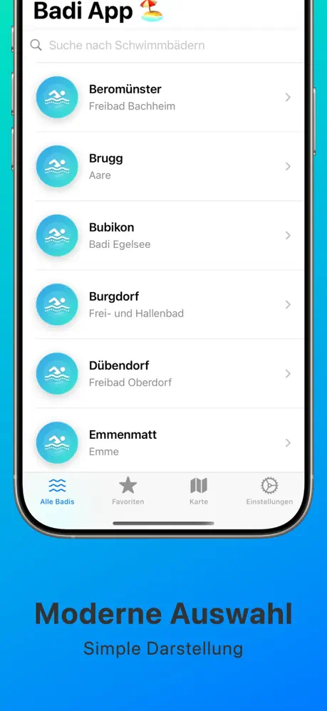
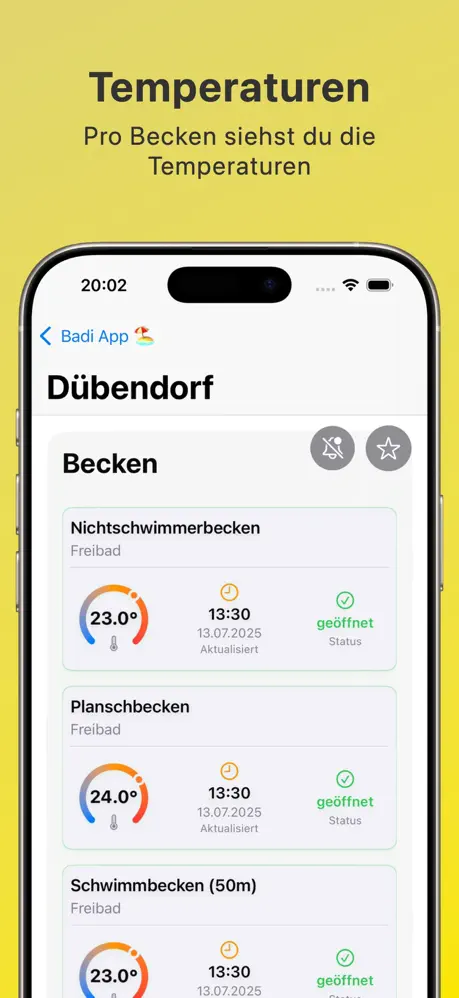
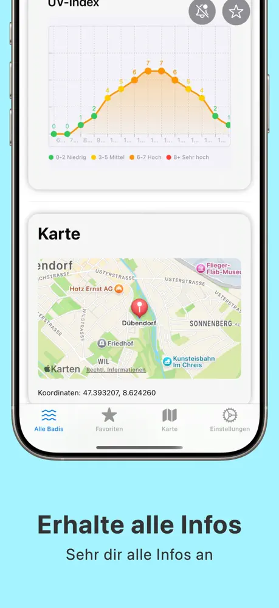
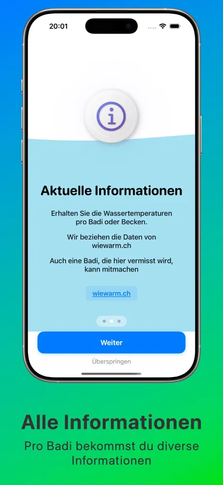
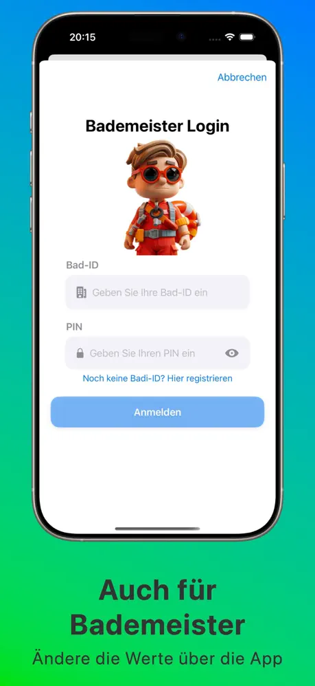
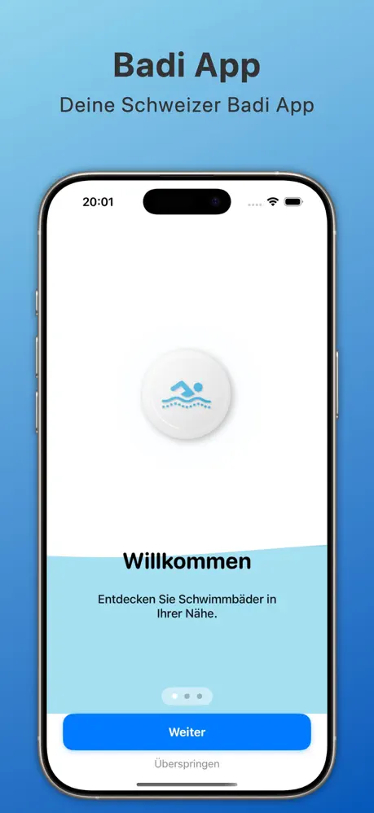

Wassertemperaturen
Aktuelle Temperaturen pro Becken – damit du weisst, ob das Wasser angenehm ist, bevor du losgehst.

Dein Schweizer Schwimmbad-Guide
Entdecke die perfekte Badi für jeden Sommertag: aktuelle Wassertemperaturen pro Becken, Öffnungszeiten, Wetter und die nächste Badi in deiner Nähe.



Screenshots
Badis finden, Temperaturen prüfen und alle Infos auf einen Blick.



Funktionen
Alle wichtigen Informationen zu Schweizer Schwimmbädern – übersichtlich in einer App.
Aktuelle Temperaturen pro Becken – damit du weisst, ob das Wasser angenehm ist, bevor du losgehst.
Im Tab «Seen» findest du die Wassertemperaturen der Schweizer Seen.
Öffnungszeiten und Status der Badi – nie mehr vor verschlossenen Türen stehen.
Standortbasierte Suche, Karte und Kantons-Filter für die nächste Badi.
Lieblingsbadis speichern und über Temperaturänderungen und Status informiert werden.
Wettervorhersage und UV-Index für deinen Badi-Besuch.
Mit Bad-ID und PIN aktualisieren Badis ihre Werte direkt in der App.
Auf Deutsch, Französisch, Italienisch und Englisch.
Die Badi App ist kostenlos im App Store – für iPhone und iPad. Fragen oder Feedback? badiapp@isupport.ch